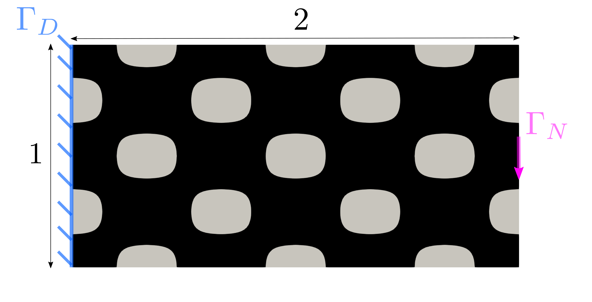
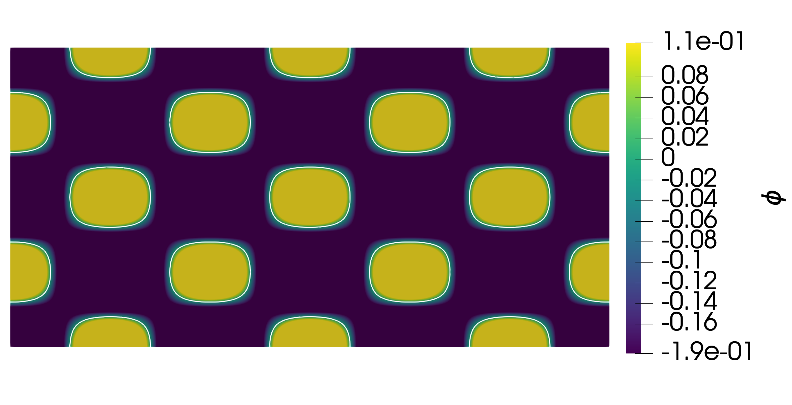
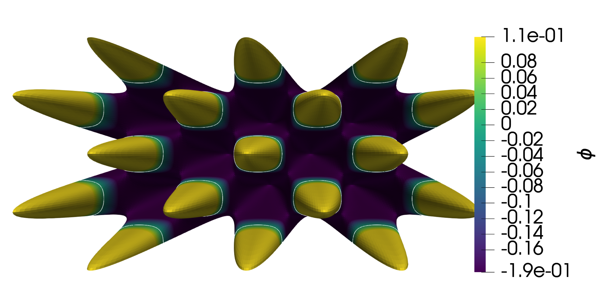
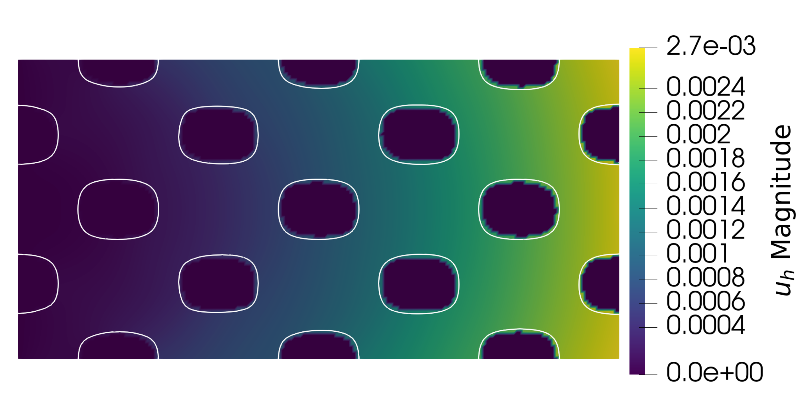
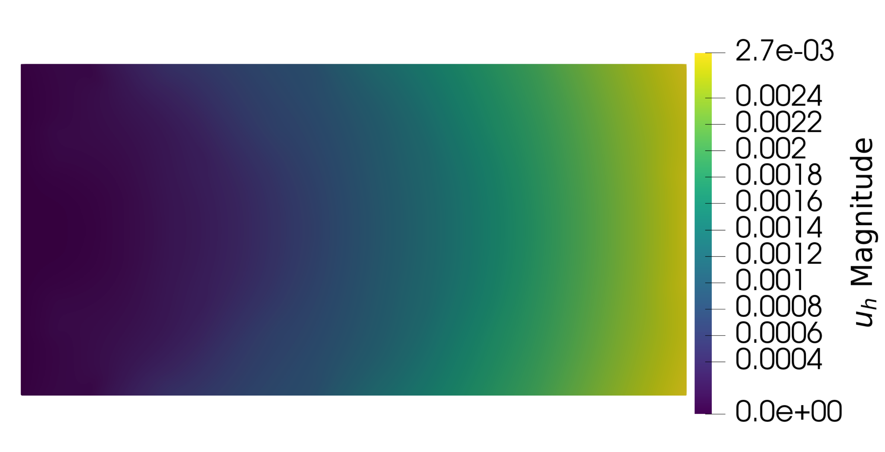
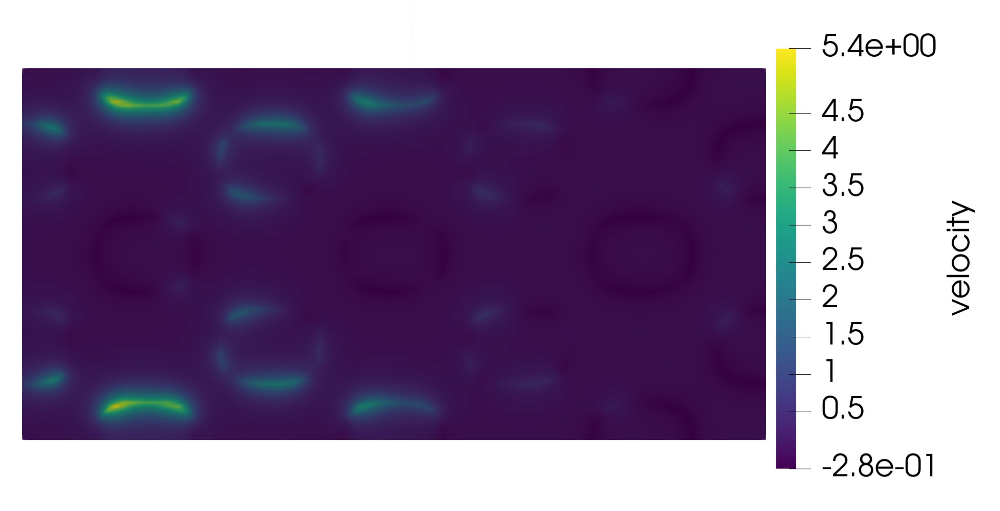
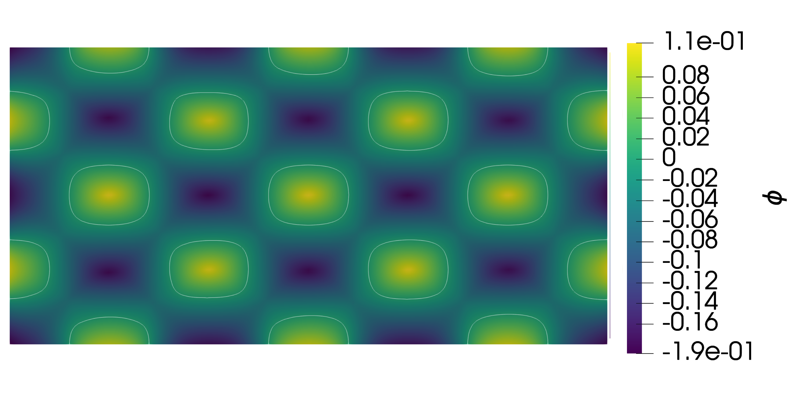

Compliance minimization¶
Compliance minimization is a fundamental problem in structural topology optimization. The objective is to optimally distribute a limited amount of material within a given design domain to maximize the overall stiffness (i.e., minimize the compliance) of the structure under prescribed loads.
Running the Tutorial¶
To reproduce this example, open a terminal, navigate to the src directory of the OptiCut repository, and execute the main Python script passing the corresponding parameter file:
cd src
python3 main.py parameters/param_compliance.txt
Upon completion, the optimization history is exported in XDMF format. To visualize the evolution of the structure and the cost function:
Open ParaView.
Go to File > Open and select the generated file src/res/results.xdmf.
Click Apply in the Properties panel. You can then use the time-player controls at the top to animate the optimization iterations.
Problem definition¶
We seek the optimal shape, \(\widetilde{\Omega}\subset D\), that minimizes the compliance for a linear elastic material subject to Dirichlet and Neumann boundary conditions. We impose a target area (or volume) on the structure, which introduces an equality constraint. The continuous optimization problem is formally defined as:
where \(u\) is the displacement field, solution to the linear elasticity weak form. The volume constraint is defined as:
with \(\overline{V}\) representing the target volume.
Shape derivative¶
Using Céa’s method (or the Lagrangian approach), the shape derivative of the compliance minimization problem is given by:
where \(n\) is the outward unit normal to the boundary \(\partial\Omega\) and \(\theta\) is the advection velocity field.
To rigorously enforce the volume constraint during the optimization process, we employ the Augmented Lagrangian Method (ALM) (see Augmented lagrangian Method). First, we define the modified augmented Lagrangian functional as:
The shape derivative of this new functional yields:
Using the standard shape optimization framework, the descent direction (normal boundary velocity) is directly deduced as:
Algorithm¶
The overall optimization process follows a robust iterative scheme combining finite element analysis and level-set advection:
BEGIN
Initialize function spaces and the Level-Set function φ
uh ← Solve Primal problem (linear elasticity): a(u,v) = l(v)
WHILE || J(Ω_{n+1}) - J(Ω_n) || > tol :
n ← n + 1
λ_ALM, μ_ALM ← Update ALM parameters
v ← Compute descent direction on Γ
v_ext ← Extend and regularize velocity across the domain D (Riesz)
v_reg ← Normalize the extended velocity field
WHILE adv_NAN ≠ 1 :
φ_temp ← Advect the level-set function (Hamilton-Jacobi)
φ_temp ← Periodic Reinitialization of the level-set
uh ← Solve Primal problem
dt, j_max, adv_NAN ← Update CFL parameters
φ ← φ_temp
END
Application¶
We investigate the case of an embedded steel beam measuring \(1\text{m}\times 2\text{m}\), subjected to a uniformly distributed tensile load at \(\pm 0.5\text{m}\) with a magnitude of \(g=-0.1 e_{y}\text{ GPa}\). The numerical parameters characterizing the mechanical model are summarized in Table 1. The domain \(\Omega \subset D\) is initialized as illustrated in Figure 2, and discretized using a \(100\times200\) finite element grid. The optimization aims to reach a target area of \(1.2 \text{ m}^{2}\) starting from an initial area of \(1.64\text{ m}^{2}\). The optimal shape obtained is shown in CutFEM solution (using the CutFEM approach) and in Ersatz solution (using the Ersatz material method).


Figure 2 Initialization of \(\Omega\subset\text{D}\)¶

Figure 3 Initialization of the mesh.¶
Parameter |
Value |
Unit |
|---|---|---|
E (Young Modulus) |
210 |
GPa |
\(\nu\) |
0.33 |
|
Strength |
0.1 |
GPa |
Implementation¶
Below, we demonstrate how OptiCut elegantly solves this problem using its modern object-oriented architecture.
1. Loading Parameters and Mesh
First, we load the simulation parameters from the text file and generate the corresponding mesh.
1from utils.config_utils import load_parameters
2from utils.ls_utils import load_mesh
3from utils.spaces_utils import init_function_spaces
4
5parameters = load_parameters(use_file=1, filename="param_compliance.txt")
6msh = load_mesh(parameters.mesh_case, parameters, mesh_folder="mesh")
7msh.topology.create_connectivity(msh.topology.dim, msh.topology.dim-1)
2. Function Spaces and Level Set Initialization
We allocate the required finite element function spaces for the level set, the displacement field, and the integration measures.
1spaces = init_function_spaces(msh)
2V, V_ls, Q, V_DG = spaces["V"], spaces["V_ls"], spaces["Q"], spaces["V_DG"]
3
4# Initialize the level set geometry
5from utils.ls_utils import init_level_set
6
7ls_func = init_level_set(msh, parameters, parameters.mesh_case)
8ls_func.x.scatter_forward()


Figure 4 Initialization of the level set function.¶


Figure 5 Initialization of the level set (warped projection).¶
3. Boundary Conditions and Solvers
We specify the Dirichlet and Neumann boundary conditions, and instantiate our specific problem topology (Compliance_Problem) alongside the underlying solvers (Ersatz and CutFEM).
1from fem.boundary_conditions import initialize_boundary_conditions, initialize_shift
2from config.problem import Compliance_Problem
3from solvers.ersatz_elastic_solver import ErsatzElasticSolver
4from solvers.cutfem_elastic_solver import CutFEMElasticSolver
5from levelset.levelSet_tool import Advection, Reinitialization
6
7bcs, bc_velocity, ds = initialize_boundary_conditions(parameters.mesh_case, msh, V, V_ls, parameters)
8shift = initialize_shift(parameters.mesh_case, msh, parameters)
9
10problem_topo = Compliance_Problem()
11
12# Initialize solvers
13AdvectionSolver = Advection(ls_func, V_ls, dt=parameters.dt)
14ReinitSolver = Reinitialization(ls_func, V_ls, l=parameters.l_reinit)
15CutFemSolver = CutFEMElasticSolver(ls_func, V_ls, V, ds, bcs, bc_velocity, parameters, problem_topo, shift)
4. Primal Problem Resolution
We compute the displacement field \(u_h\) by solving the linear elasticity problem. The code elegantly switches between CutFEM and Ersatz based on the parameter flags.
1if parameters.cutFEM == 1:
2 uh, ph = CutFemSolver.cutfem_solver(ls_func, parameters, problem_topo)
3 measure = CutFemSolver.dxq
4else:
5 # Ersatz fallback (not shown for brevity, see main.py)
6 pass


Figure 6 Displacement field (Iteration 0) with CutFEM.¶


Figure 7 Displacement field (Iteration 0) with Ersatz method.¶
5. Shape Derivative and Descent Direction
The descent direction is derived by computing the shape derivative integrand, followed by Riesz representation and velocity normalization to ensure numerical stability.
1from levelset.velocity_tools import prepare_descent, descent_direction, velocity_normalization
2
3shape_derivative = problem_topo.shape_derivative_integrand(uh, ph, CutFemSolver.lame_mu, CutFemSolver.lame_lambda, parameters, measure)
4constraint = problem_topo.constraint(uh, CutFemSolver.lame_mu, CutFemSolver.lame_lambda, parameters, measure, 0)
5shape_derivative_integrand_constraint = problem_topo.shape_derivative_integrand_constraint(uh, ph, CutFemSolver.lame_mu, CutFemSolver.lame_lambda, parameters, measure)
6
7# Update ALM parameters
8from optimization import almMethod
9almMethod.maj_param_constraint_optim(parameters, constraint)
10
11# Compute and regularize the advection velocity
12resources = prepare_descent(msh, V_ls, parameters)
13v_reg = descent_direction(ls_func, msh, parameters, bc_velocity, V_ls, constraint, shape_derivative_integrand_constraint, shape_derivative, resources)
14
15# Normalize velocity in place
16norm_factor = velocity_normalization(v_reg, parameters.alpha_reg_velocity)
17v_reg.x.array[:] *= norm_factor
18v_reg.x.scatter_forward()


Figure 8 Regularized velocity field used for the level set advection.¶
6. Advection and Reinitialization
Finally, the boundary is advected by solving the Hamilton-Jacobi equation, and the level set function is periodically reinitialized to maintain its signed distance property.
1from optimization import opti_tool
2
3# Evaluate cost and lagrangian (required for CFL heuristic)
4cost = problem_topo.cost(uh, ph, CutFemSolver.lame_mu, CutFemSolver.lame_lambda, measure, parameters)
5lagrangian_cost = cost + parameters.ALM_lagrangian_multiplicator * constraint + 0.5 * parameters.ALM_penalty_parameter * constraint**2
6
7# Dynamically adjust time steps for CFL condition
8parameters.dt, adv_bool = opti_tool.catch_NAN(cost, lagrangian_cost, constraint, parameters.dt, 0)
9
10# Advect the boundary using the normalized velocity
11ls_func_advected = AdvectionSolver.cut_fem_adv(v_reg, parameters.dt)
12
13# Periodically reinitialize the level set to a signed distance function
14ReinitSolver.reinitializationPC_inplace(ls_func_advected, parameters.step_reinit)
Figure 9 Level set before advection.¶


Figure 10 Reinitialized level set function.¶
CutFEM solution¶
The optimization results using the rigorous CutFEM method, obtained after a fixed limit of 300 iterations, are provided below. The resulting topology strictly satisfies the imposed volume constraints while achieving high-resolution boundary tracking without re-meshing.
Ersatz solution¶
The analogous results utilizing the fictitious material (Ersatz) approach converge to a remarkably similar geometry. While the Ersatz method exhibits slight boundary diffusion inherent to classical elements, OptiCut’s implementation still provides a highly robust continuum approximation.